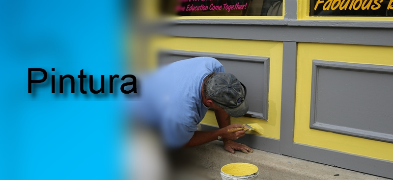
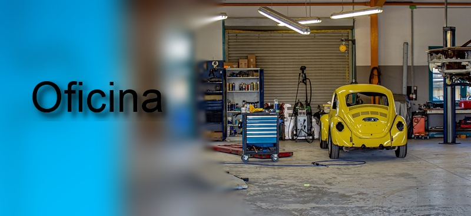

Casos de Sucesso
Solução de contabilidade, organização e de programação.
Empresa Eventbuddy
A Eventbuddy é uma plataforma online de venda de bilhetes para promotores e organizadores de eventos.
Desafio
Necessidade na organização dos serviços de contabilidade e fiscalidade com reporte regular das informações financeiras.
Organização e acompanhamento dos requisitos e criação da plataforma online
Criação de automatismos para aumentar resultados.
Solução
Com isso, foi possível atingir métricas surpreendentes, como:- Serviço de contabilidade organizado.

- Criação da plataforma digital.
- Automatismos em processos repetitivos.
Solução de contabilidade, organização e de programação.
Empresa Gráfica
Empresa no mercado a industria gráfica com grande implantação no mercado.
Desafio
Necessidade na organização dos serviços de contabilidade e fiscalidade com reporte regular das informações financeiras.
Organização e acompanhamento dos requisitos e criação de uma aplicação de orçamentação e controlo de produção.
Criação de automatismos para aumentar resultados.
Solução
Com isso, foi possível atingir métricas surpreendentes, como:- Serviço de contabilidade organizado.
- Software de orçamentos gráficos.
- Software de controlo de produção.
- Automatismos em processos repetitivos.
Solução de contabilidade e organização.

Empresa de Pintura
Empresa de pinturas de edifícios na região de cascais.
Desafio
Necessidade na organização dos serviços de contabilidade incluindo a faturação.
Solução
Com isso, foi possível atingir os objetivos com:- Serviço de contabilidade.
- Serviço de faturação.
Solução de contabilidade e organização.
Empresa SPA
Empresa de SPA na região de Cascais.
Desafio
Necessidade na organização dos serviços de contabilidade.
Solução
Com isso, foi possível atingir os objetivos com:- Serviço de contabilidade.
Solução de contabilidade e organização.

Empresa Oficina Auto
Empresa de reparação de automóveis.
Desafio
Necessidade na organização dos serviços de contabilidade.
Solução
Com isso, foi possível atingir os objetivos com:- Serviço de contabilidade.